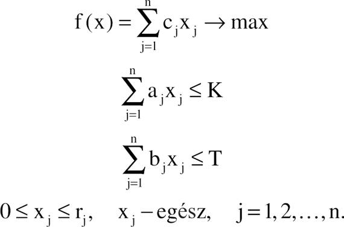

Hajórakodási probléma szemléltetése progresszív webalkalmazással 🚢
Használat
- A képernyőn négy gombot láthatunk, melyek közül az egyik nem használható. Az első három gombbal lehetőség van kiválasztani a megoldandó feladatot.
- A feladat kiválasztása után, a Lépés gombbal futtathatjuk az algoritmust.
- Minden egyes gombnyomásra, egy feladat lépést eszünk meg, mindaddig amég el nem érjük az optimális megoldást.
- A konténereket reprezentáló dobozok különböző színezést kapnak, attól függően, hogy vizsgáljuk őket, vagy sem. Az aktuálisakat világoskék színnel láthatjuk.
- Mindeközben, az oldal tetején található szövegdobozban folyamatosan követhetjük az éppen aktuális lépés paramétereit.
- Ha eljutottunk a megoldásig, az optimumba tartozó konténerek zöld színűre váltanak.
- Egy újabb futtatáshoz, az Újra gomb megnyomása szükséges.
Jellemzés
A probléma a hátizsák feladat egy további korláttal kiegészített típusa. Egy olyan hajót kell megrakni bizonyos
nem osztható áruval, melynek ismert a súly és a térfogat korlátja. Ezeken felül ismert az egyes áruk súlya,
térfogata és értéke. A megoldás célja meghatározni, hogy az adott korlátok mellett, mennyi az a legnagyobb értékű
rakomány, amelyet a hajó elszállíthat.
n -- az árucikkek (tárgyak) típusainak száma,
aj -- j-edik tárgy súlya,
bj -- j-edik tárgy térfogata,
rj -- j-edik tárgy darabszáma,
cj -- j-edik tárgy értéke,
T -- a hajó rakodási térfogata,
K -- a hajó rakodási súlya.
Ha xj jelöli a j-edik tárgyból szállítandó ismeretlen darabszámot, akkor a feladatunk a következő alakú
LP modellhez vezet:

ahol x = (x1, x2, ..., xn).
Hivatkozások
Fejlesztői környezet:
- Windows operációs rendszert futtató számítógép
- Visual Studio Code
- Android Studio